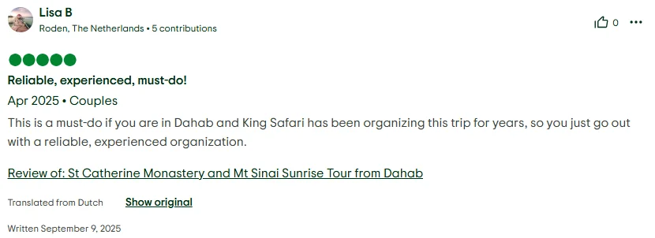

De klassieke zonsopgang op de berg Sinaï, maar net even anders. De meeste groepstours vertrekken om 22:00 uit Dahab. Wij vertrekken bewust om 21:00: de top wordt erg druk, dus wie eerder begint, klimt voor iedereen uit en heeft de top een tijdje bijna voor zichzelf. Na de zonsopgang loop je naar beneden naar het Sint-Catharinaklooster, net als het opengaat.

Het verloop
- 21:00: vertrek vanaf The Hub in Dahab
- Ongeveer 2 uur: rit naar Sint-Catharina
- De klim: je lokale berggids ontmoet je en je begint te klimmen. 5 km, ongeveer 3 uur: twee derde is een pad, het laatste stuk zijn 750 stenen treden
- Op de top: een tijdje heb je de top bijna voor jezelf, daarna komen de andere groepen en wordt het druk. Je wacht op de zonsopgang
- Na de zonsopgang: afdalen van de berg
- 09:00: het klooster gaat open en een kloostergids (een andere gids) leidt je rond
- 10:00: je ontmoet je auto en rijdt terug, aankomst bij The Hub rond 12:00 uur
In het klooster
Het Sint-Catharinaklooster aan de voet van de berg Sinaï is een van de oudste nog bewoonde kloosters ter wereld. Met je kloostergids zie je de brandende braamstruik, waar Mozes met God sprak, de bron van Mozes en de kloosterkerk, met eeuwen aan iconen en geschiedenis.

Over kamelen
Kamelen zijn niet inbegrepen, niet omhoog en niet omlaag. We raden echt aan om te lopen, tenzij je erg moe bent. Neem je toch een kameel, doe dat dan alleen omhoog, nooit omlaag: bergaf word je naar voren gedrukt tussen de poten van de kameel en is het heel moeilijk om je vast te houden.
Inbegrepen
- Vervoer van en naar The Hub, Dahab
- Toegang tot Nationaal Park Sint-Catharina
- De lokale berggids
- De kloostergids
Niet inbegrepen: Diner, ontbijt en drankjes, het museumticket in het klooster, kamelen, fooien en persoonlijke uitgaven.
Neem mee
- Je paspoort: belangrijk, er zijn controleposten onderweg
- Goede wandelschoenen
- Een zaklamp of hoofdlamp
- Warme kleding: het wordt erg koud op de top
- Water en snacks (niet inbegrepen)
- Zonnebril
- Kleding die schouders en knieën bedekt, voor het klooster
- Wat contant geld voor het museum, drankjes of een kameel
Niet meenemen
- Een drone (drones zijn verboden in Egypte)
- Korte broeken of mouwloze tops voor het kloosterbezoek
- Zware tassen: je draagt alles zelf de berg op
Prijs
€400 per auto, 1 tot 4 personen
Online boeken & betalen
Veilig betalen met je kaart via PayTabs. Betaal het volledige bedrag, of nu 50% aanbetaling en de rest in Dahab. Er wordt afgerekend in Egyptische ponden (€1 = 60 EGP).
Stuur ons na het betalen je datum en namen via WhatsApp, zodat we je trip kunnen bevestigen. Stuur via WhatsApp
Wat onze gasten zeggen



Annulering
Gratis annuleren tot 3 dagen voor de trip. Bij latere annulering wordt de volledige prijs in rekening gebracht.